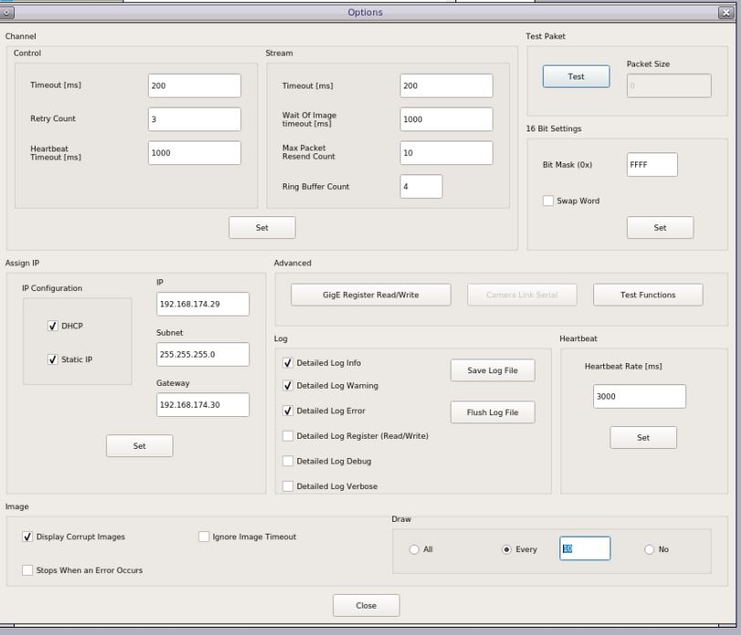

Kria™ KR260 Robotics Starter Kit |
Machine Vision Camera Tutorial |
Debug¶
To get Max fps in sphinx GEV viewer user can change the draw value in sphinx –> options based on the host type (windows or ubuntu)
On ubuntu host,
For 60 fps user must set the draw value to
10For 120 fps user must set the draw value to50On windows host,
For 60/120 fps user must set the draw value to
10
To cross check the connection between KR260 target and host use ping functionality. For Example, ping -I
<10G_interface_name> <ip address>To identify whether NIC card is inserted properly or not in ubuntu host machine PCIe slot, run this command
lspci -vvv | grep -i "82599 10 Gigabit Network"After inserting the 10G NIC card in windows host machine PCIe slot check device manager for device detection and driver installation. If driver is not installed for this device install the driver from the given link: NIC Card driver.
If user get -1 for
xmutil loadapp <app name>, try to unload the existing app firmware usingxmutil unloadappand then load the preferred app firmware.To trigger the sensor stream-on, run the Gstreamer capture pipeline in background using gst-launch-1.0 utility before starting 10GigE application.
To install the mv-camera firmware manually, use below command.
apt install xlnx-firmware-kr260-mv-camera
Note: Ensure to run the apt update to get the latest firmware.
Make sure to use the below command
sudo xmutil loadapp kr260-mv-camera
to load the mv-defect-detect firmware properly. Otherwise necessary drivers won’t be loaded, there might be some errors that popup when you run the mv-defect-detect application.
Always unload existing firmware before loading the mv-defect-detect firmware.
The Framerate displayed is only for Live Playback. To get the framerate on console, you need to prepend the keywords
GST_DEBUG="*defect*:4"in the GStreamer application/pipeline.
For Example:
GST_DEBUG="*defect*:4" mv-defect-detect
Following are some of the examples of Gstreamer pipelines
Note: Run the below command, before running any of the following pipelines, including the ones in the Demo mode.
modetest -D fd4a0000.display -s 43@41:1920x1080-60@BG24 -w 40:"alpha":0
modetest -D fd4a0000.display -s 43@41:1920x1080-60@BG24 -w 40:"g_alpha_en":0
Note: Navigate to /opt/xilinx/xlnx-app-kr260-mv-defect-detect/share/vvas/ and then run the gst-launch commands.
For Live Input and Raw Output¶
Live In - Live Out
gst-launch-1.0 v4l2src device=/dev/video0 io-mode=5 ! video/x-raw, width=1920, height=1080, format=GRAY8, framerate=60/1 ! perf ! kmssink bus-id=fd4a0000.display -vLive In - File Out
gst-launch-1.0 v4l2src device=/dev/video0 ! video/x-raw, width=1920, height=1080, format=GRAY8, framerate=60/1 ! perf ! filesink location=out.y8 -vLive In - Live Out Demo mode
gst-launch-1.0 v4l2src device=/dev/video0 io-mode=5 ! videorate ! video/x-raw, width=1920, height=1080, format=GRAY8, framerate=4/1 ! perf ! kmssink bus-id=fd4a0000.display -v
For Live Input and Pre-process Output¶
Live In - Live Out
gst-launch-1.0 v4l2src device=/dev/video0 io-mode=4 ! video/x-raw, width=1920, height=1080, format=GRAY8, framerate=60/1 ! vvas_xfilter kernels-config=otsu-accelarator.json ! queue ! vvas_xfilter kernels-config=preprocess-accelarator-stride.json ! video/x-raw, width=1920, height=1080, format=GRAY8 ! perf ! kmssink bus-id=fd4a0000.display -vLive In - File Out
gst-launch-1.0 v4l2src device=/dev/video0 io-mode=4 ! video/x-raw, width=1920, height=1080, format=GRAY8, framerate=60/1 ! vvas_xfilter kernels-config=otsu-accelarator.json ! queue ! video/x-raw, width=1920, height=1080, format=GRAY8 ! vvas_xfilter kernels-config=preprocess-accelarator.json ! video/x-raw, width=1920, height=1080, format=GRAY8 ! perf ! filesink location=out.y8 -vLive In - Live Out Demo mode
gst-launch-1.0 v4l2src device=/dev/video0 io-mode=4 ! video/x-raw, width=1920, height=1080, format=GRAY8, framerate=60/1 ! vvas_xfilter kernels-config=otsu-accelarator.json ! queue ! vvas_xfilter kernels-config=preprocess-accelarator-stride.json ! videorate ! video/x-raw, width=1920, height=1080, format=GRAY8, framerate=4/1 ! perf ! kmssink bus-id=fd4a0000.display -v
For Live Input and Final Output¶
Live In - Live Out
gst-launch-1.0 v4l2src device=/dev/video0 io-mode=4 ! video/x-raw, width=1920, height=1080, format=GRAY8, framerate=60/1 ! vvas_xfilter kernels-config=otsu-accelarator.json ! queue ! vvas_xfilter kernels-config=preprocess-accelarator-stride.json ! queue ! vvas_xfilter kernels-config=cca-accelarator.json ! queue ! vvas_xfilter kernels-config=text2overlay.json ! video/x-raw, width=1920, height=1080, format=GRAY8, framerate=60/1 ! perf ! kmssink bus-id=fd4a0000.display -vLive In - File Out
gst-launch-1.0 v4l2src device=/dev/video0 io-mode=4 ! video/x-raw, width=1920, height=1080, format=GRAY8, framerate=60/1 ! vvas_xfilter kernels-config=otsu-accelarator.json ! queue ! vvas_xfilter kernels-config=preprocess-accelarator.json ! queue ! vvas_xfilter kernels-config=cca-accelarator.json ! queue ! vvas_xfilter kernels-config=text2overlay.json ! video/x-raw, width=1920, height=1080, format=GRAY8, framerate=60/1 ! perf ! filesink location=t.y8 -vLive In - Live Out Demo mode
gst-launch-1.0 v4l2src device=/dev/video0 io-mode=4 ! video/x-raw, width=1920, height=1080, format=GRAY8, framerate=60/1 ! vvas_xfilter kernels-config=otsu-accelarator.json ! queue ! vvas_xfilter kernels-config=preprocess-accelarator-stride.json ! queue ! vvas_xfilter kernels-config=cca-accelarator.json ! queue ! vvas_xfilter kernels-config=text2overlay.json ! videorate ! video/x-raw, width=1920, height=1080, format=GRAY8, framerate=4/1 ! perf ! kmssink bus-id=fd4a0000.display -v
For File Input and Raw Output¶
File In - Live Out
gst-launch-1.0 filesrc location=./input.y8 blocksize=2073600 ! rawvideoparse use-sink-caps=false width=1920 height=1080 format=gray8 framerate=60/1 ! perf ! kmssink bus-id=fd4a0000.display -vFile In - File Out
gst-launch-1.0 filesrc location=./input.y8 blocksize=2073600 ! rawvideoparse use-sink-caps=false width=1920 height=1080 format=gray8 framerate=60/1 ! perf ! filesink location=out.y8 -vFile In - Live Out Demo mode
gst-launch-1.0 filesrc location=./input.y8 blocksize=2073600 ! rawvideoparse use-sink-caps=false width=1920 height=1080 format=gray8 framerate=4/1 ! perf ! kmssink bus-id=fd4a0000.display -v
For File Input and Pre-process Output¶
File In - Live Out
gst-launch-1.0 filesrc location=./input.y8 blocksize=2073600 ! rawvideoparse use-sink-caps=false width=1920 height=1080 format=gray8 framerate=60/1 ! vvas_xfilter kernels-config=otsu-accelarator.json ! queue ! vvas_xfilter kernels-config=preprocess-accelarator-stride.json ! queue ! video/x-raw, width=1920, height=1080, format=GRAY8, framerate=60/1 ! perf ! kmssink bus-id=fd4a0000.display -vFile In - File Out
gst-launch-1.0 filesrc location=./input.y8 blocksize=2073600 ! rawvideoparse use-sink-caps=false width=1920 height=1080 format=gray8 framerate=60/1 ! vvas_xfilter kernels-config=otsu-accelarator.json ! queue ! vvas_xfilter kernels-config=preprocess-accelarator.json ! video/x-raw, width=1920, height=1080, format=GRAY8, framerate=60/1 ! perf ! filesink location=out.y8 -vFile In - Live Out Demo mode
gst-launch-1.0 filesrc location=./input.y8 blocksize=2073600 ! rawvideoparse use-sink-caps=false width=1920 height=1080 format=gray8 framerate=4/1 ! vvas_xfilter kernels-config=otsu-accelarator.json ! queue ! vvas_xfilter kernels-config=preprocess-accelarator-stride.json ! video/x-raw, width=1920, height=1080, format=GRAY8, framerate=4/1 ! perf ! kmssink bus-id=fd4a0000.display -v
For File Input and Final Output¶
File In - Live Out
gst-launch-1.0 filesrc location=./input.y8 blocksize=2073600 ! rawvideoparse use-sink-caps=false width=1920 height=1080 format=gray8 framerate=60/1 ! vvas_xfilter kernels-config=otsu-accelarator.json ! queue ! vvas_xfilter kernels-config=preprocess-accelarator-stride.json ! queue ! vvas_xfilter kernels-config=cca-accelarator.json ! queue ! vvas_xfilter kernels-config=text2overlay.json ! video/x-raw, width=1920, height=1080, format=GRAY8, framerate=60/1 ! perf ! kmssink bus-id=fd4a0000.display -vFile In - File Out
gst-launch-1.0 filesrc location=./input.y8 blocksize=2073600 ! rawvideoparse use-sink-caps=false width=1920 height=1080 format=gray8 framerate=60/1 ! vvas_xfilter kernels-config=otsu-accelarator.json ! queue ! vvas_xfilter kernels-config=preprocess-accelarator.json ! queue ! vvas_xfilter kernels-config=cca-accelarator.json ! queue ! vvas_xfilter kernels-config=text2overlay.json ! video/x-raw, width=1920, height=1080, format=GRAY8, framerate=60/1 ! perf ! filesink location=out.y8 -vFile In - Live Out Demo mode
gst-launch-1.0 filesrc location=./input.y8 blocksize=2073600 ! rawvideoparse use-sink-caps=false width=1920 height=1080 format=gray8 framerate=4/1 ! vvas_xfilter kernels-config=otsu-accelarator.json ! queue ! vvas_xfilter kernels-config=preprocess-accelarator-stride.json ! queue ! vvas_xfilter kernels-config=cca-accelarator.json ! queue ! vvas_xfilter kernels-config=text2overlay.json ! video/x-raw, width=1920, height=1080, format=GRAY8, framerate=4/1 ! perf ! kmssink bus-id=fd4a0000.display -v